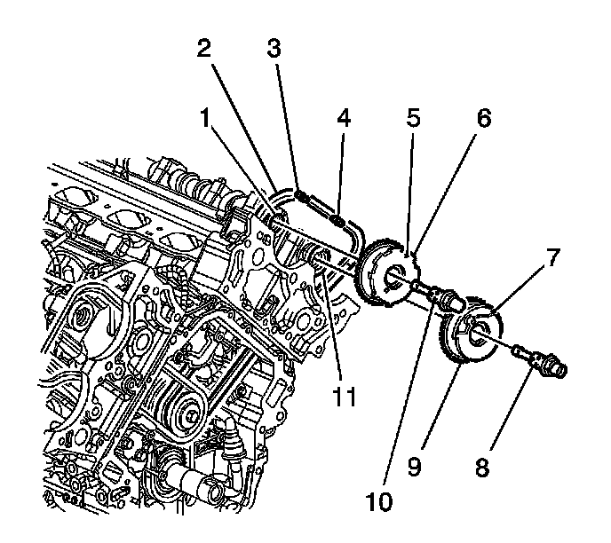
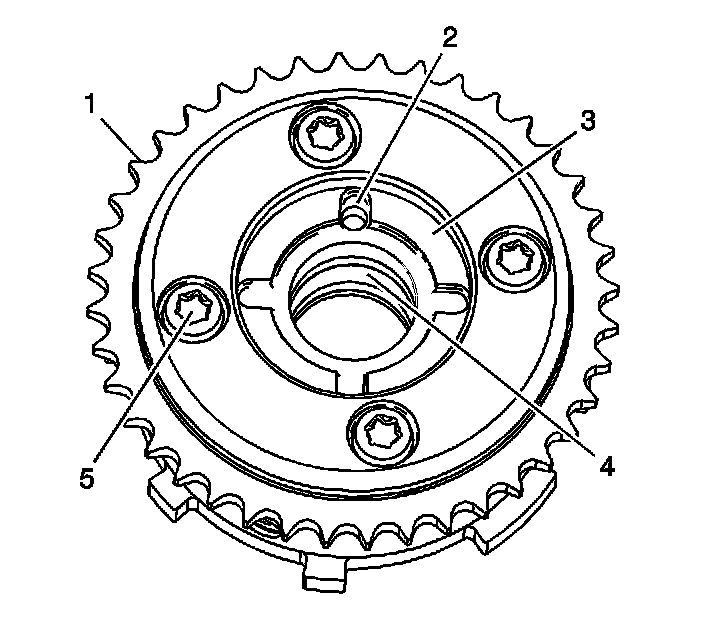
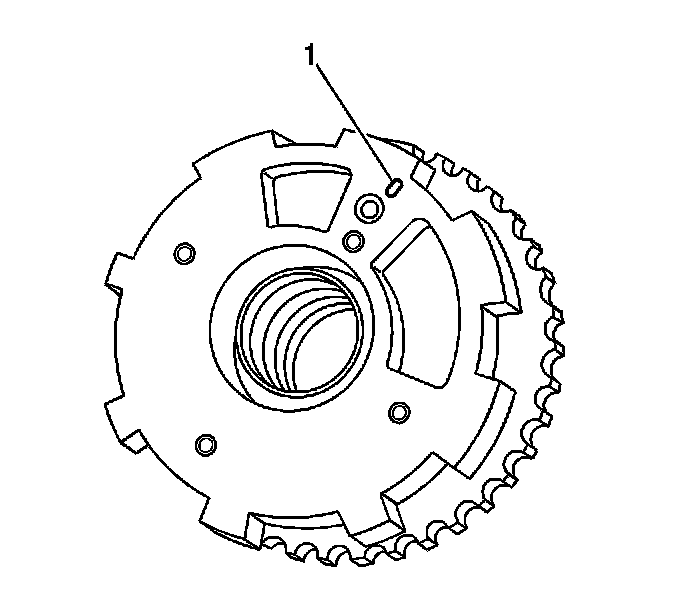

Camshaft Position Actuator Replacement - Bank 2 (Left Side) Intake
Camshaft Position Actuator Replacement - Bank 2 (Left Side) Intake
Removal Procedure

1. Remove the left intake camshaft position actuator oil control valve (10). Refer toCamshaft Position Actuator Oil Control Valve Replacement - Bank 2 (Left Side) Intake (Camshaft Position Actuator Oil Control Valve Replacement - Bank 2 (Left Side) Intake) .
2. Pull the actuator forward to disengage the camshaft alignment pin from the actuator.
3. Disengage the secondary timing chain from the actuator and remove the actuator.
Installation Procedure

1. Locate the camshaft alignment pin hole (2) on the back of the actuator.

2. Locate the timing alignment mark (1) on the front of the actuator.
3. Engage the actuator timing gear teeth with the secondary timing chain ensuring that the actuator alignment mark (5) corresponds with the paint mark created on the chain link.
4. Slide the actuator over the camshaft alignment pin and install the actuator onto the camshaft.
5. Install the left intake camshaft position actuator oil control valve (10). Refer toCamshaft Position Actuator Oil Control Valve Replacement - Bank 2 (Left Side) Intake (Camshaft Position Actuator Oil Control Valve Replacement - Bank 2 (Left Side) Intake) .